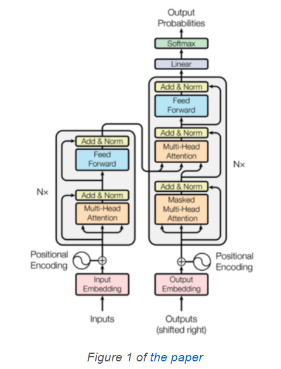

在本文中,我想讨论一下基于 Transformer 神经网络的代码细节，

在下文中,我使用PyTorch编写每个组件的细节。
嵌入层 Embedding
嵌入层的目的是将词索引转换为可计算的向量， 比如“你”这个词， 在词典中索引是5，$X = (0.1, 0.2, 0.11, -0.2, ..., 0.33)$
位置编码 Positional Encoding
位置编码就是将词的位置信息转换为可计算的向量，
我们可以用下面的代码来理解位置编码：
1 2 3 4 5 6 7 8 9 10 import mathimport torchpe = torch.zeros(max_positions, dim_embed) for pos in range (max_positions): for i in range (0 , dim_embed, 2 ): theta = pos / (10000 ** (i / dim_embed)) pe[pos, i ] = math.sin(theta) pe[pos, i + 1 ] = math.cos(theta)
然而使用循环是非常耗时的， 所以我们利用矩阵的并行计算原理，
1 2 3 4 5 6 7 8 9 10 11 12 13 14 15 16 17 18 19 20 21 22 23 24 25 26 27 28 29 30 31 32 33 34 35 36 37 import mathimport torchimport torch.nn as nnfrom torch import Tensorclass PositionalEncoding (nn.Module): def __init__ (self, max_positions: int , dim_embed: int , drop_prob: float ) -> None : super ().__init__() assert dim_embed % 2 == 0 position = torch.arange(max_positions).unsqueeze(1 ) dim_pair = torch.arange(0 , dim_embed, 2 ) div_term = torch.exp(dim_pair * (-math.log(10000.0 ) / dim_embed)) pe = torch.zeros(max_positions, dim_embed) pe[:, 0 ::2 ] = torch.sin(position * div_term) pe[:, 1 ::2 ] = torch.cos(position * div_term) pe = pe.unsqueeze(0 ) self.register_buffer('pe' , pe) self.dropout = nn.Dropout(p=drop_prob) def forward (self, x: Tensor ) -> Tensor: max_sequence_length = x.size(1 ) x = x + self.pe[:, :max_sequence_length] x = self.dropout(x) return x
这一行代码看起来有些复杂： div_term = torch.exp(dim_pair * (-math.log(10000.0) / dim_embed)) ,
带缩放的点积注意力机制 Scaled Dot-Product Attention 带缩放的点积注意力机制顾名思义就是利用两个词向量的点乘来反映两者的相关性， 缩放（Scaled）意味着我们将点乘结果除以词向量维数的平方根。
这里的attention机制，相比于经典的Dot-product Attention其实就是多了一个scale项。这里的作用是啥呢？当d比较小的时候，要不要scale都无所谓，但是当d比较大时，内积的值的范围就会变得很大，不同的内积的差距也会拉大，这样的话，再经过softmax进一步的扩大差距，就会使得得到的attention分布很接近one-hot，这样会导致梯度下降困难，模型难以训练。在Transformer中，d=512，算比较大了，因此需要进行scaling。
1 2 3 4 5 6 7 8 9 10 11 12 13 14 15 16 import torchimport torch.nn as nnimport torch.nn.functional as Ffrom torch import Tensordef attention (query: Tensor, key: Tensor, value: Tensor, mask: Tensor=None ) -> Tensor: sqrt_dim_head = query.shape[-1 ]**0.5 scores = torch.matmul(query, key.transpose(-2 , -1 )) scores = scores / sqrt_dim_head if mask is not None : scores = scores.masked_fill(mask==0 , -1e9 ) weight = F.softmax(scores, dim=-1 ) return torch.matmul(weight, value)
自我注意力和padding掩码 Self-Attention and Padding Mask 注意力机制就是产生一个权重矩阵， 如下图所示， 红色部分就是权重比较大的部分。
但是由于我们使用了Padding， 就是较短的句子会被空白符替代， 空白符不应该参与到权重计算中， 所以我们在mask中， 对于空白位置使用很大的负数，
解码器的输入中， 我们使用mask来隐藏后续位置的信息。我们看下下面这个序列：
1 [<SOS>, 'Bonjour', 'le', 'monde', '!']
对于'Bonjour'， 不应该使用之后的信息 'le', 'monde', '!', 所以它的注意力掩码就是[1, 1, 0, 0, 0]。
所以， 解码器中的注意力机制是padding掩码和后续掩码的结合， 在生成的注意力矩阵中， 上三角是被掩盖的。
1 2 3 4 5 6 7 8 9 10 11 12 13 14 15 16 17 18 19 20 21 22 23 24 25 26 27 def create_masks (src_batch: Tensor, tgt_batch: Tensor ) -> Tuple [Tensor, Tensor]: src_pad_mask = (src_batch != PAD_IDX).unsqueeze(1 ) tgt_pad_mask = (tgt_batch != PAD_IDX).unsqueeze(1 ) max_tgt_sequence_length = tgt_batch.shape[1 ] tgt_attention_square = (max_tgt_sequence_length, max_tgt_sequence_length) full_mask = torch.full(tgt_attention_square, 1 ) subsequent_mask = torch.tril(full_mask) subsequent_mask = subsequent_mask.unsqueeze(0 ) return src_pad_mask, tgt_pad_mask & subsequent_mask
多头注意力 Multi-Head Attention 下图是原论文中用到的多头注意力机制图：
在编码器中， 多头注意力充当自我注意力机制( self-attention mechanism)， 解码器中充当自我注意力和目标源注意力(target-source attention), 可以看下图的区别：
上图中， 在解码器中的“masked multi-head attention”， 多了一个mask， 因为解码器使用了mask来掩盖后续词的信息。
multi-head attention 有三个输入， 分别是V、K和Q， 在编码器中， 这三个都是词嵌入向量， 但在解码器中， V和K是编码器的输出结果，
从概念上讲,我们独立执行多个scaled dot-product attention计算, 每个头一个。
1 2 3 4 5 6 7 8 9 10 11 12 13 14 15 16 17 18 19 20 21 22 23 24 25 26 27 28 29 30 31 32 33 34 35 36 37 38 39 40 41 class MultiHeadAttention (nn.Module): def __init__ (self, num_heads: int , dim_embed: int , drop_prob: float ) -> None : super ().__init__() assert dim_embed % num_heads == 0 self.num_heads = num_heads self.dim_embed = dim_embed self.dim_head = dim_embed // num_heads self.query = nn.Linear(dim_embed, dim_embed) self.key = nn.Linear(dim_embed, dim_embed) self.value = nn.Linear(dim_embed, dim_embed) self.output = nn.Linear(dim_embed, dim_embed) self.dropout = nn.Dropout(drop_prob) def forward (self, x: Tensor, y: Tensor, mask: Tensor=None ) -> Tensor: query = self.query(x) key = self.key (y) value = self.value(y) batch_size = x.size(0 ) query = query.view(batch_size, -1 , self.num_heads, self.dim_head) key = key .view(batch_size, -1 , self.num_heads, self.dim_head) value = value.view(batch_size, -1 , self.num_heads, self.dim_head) query = query.transpose(1 , 2 ) key = key .transpose(1 , 2 ) value = value.transpose(1 , 2 ) if mask is not None : mask = mask.unsqueeze(1 ) attn = attention(query, key, value, mask) attn = attn.transpose(1 , 2 ).contiguous().view(batch_size, -1 , self.dim_embed) out = self.dropout(self.output(attn)) return out
Q, K, V 的形状从(batch_size, max_sequence_length, dim_embed)变为(batch_size, num_heads, max_sequence_length, dim_head)，dim_head = dim_embed // num_head。 例如dim_embed = 512 且 num_heads = 8, 那么dim_head = 64。
然后， 我们将attention的结果reshape成(batch_size, max_sequence_length, dim_embed)。 所以， 经过了多头注意力机制，
mask.unsqueeze(1)的目的是给mask增加一个维度， 这样不同的头使用相同的mask， 在attention这个函数中， masked_fill可以实现这个目的。dropout.
分位置的前馈机制 Position-wise Feed-Forward
Position-wise Feed-Forward 给词向量增加了非线性。 词向量的形状是(batch_size, max_sequence_length, dim_embed),flatten然后再进入前馈神经网络， 我们并没有将词向量进行flatten， 我们的线性操作是对每个位置进行独立的操作，
1 2 3 4 5 6 7 8 9 10 11 12 13 14 15 16 import torch.nn as nnfrom torch import Tensorclass PositionwiseFeedForward (nn.Module): def __init__ (self, dim_embed: int , dim_pffn: int , drop_prob: float ) -> None : super ().__init__() self.pffn = nn.Sequential( nn.Linear(dim_embed, dim_pffn), nn.ReLU(inplace=True ), nn.Dropout(drop_prob), nn.Linear(dim_pffn, dim_embed), nn.Dropout(drop_prob), ) def forward (self, x: Tensor ) -> Tensor: return self.pffn(x)
第一次线性操作扩大了维度。我了解这样做意味着ReLU不会丢失太多信息。
编码器 encoder
Transformer使用了多个encoder模块， 从图中可以看到。
下面的代码实现了多个encoder的堆叠， 但是没有实现EncoderBlock， 之后才会实现。
1 2 3 4 5 6 7 8 9 10 11 12 13 14 15 16 17 18 19 20 21 22 23 24 25 import torch.nn as nnfrom torch import Tensorfrom .attention import MultiHeadAttentionfrom .feed_forward import PositionwiseFeedForwardclass Encoder (nn.Module): def __init__ (self, num_blocks: int , num_heads: int , dim_embed: int , dim_pffn: int , drop_prob: float ) -> None : super ().__init__() self.blocks = nn.ModuleList( [EncoderBlock(num_heads, dim_embed, dim_pffn, drop_prob) for _ in range (num_blocks)] ) self.layer_norm = nn.LayerNorm(dim_embed) def forward (self, x: Tensor, x_mask: Tensor ): for block in self.blocks: x = block(x, x_mask) x = self.layer_norm(x) return x
EncoderBlock
接下来我们实现图中所示的结构。
1 2 3 4 5 6 7 8 9 10 11 12 13 14 15 16 17 18 19 20 21 22 23 24 25 26 27 28 29 30 31 32 33 34 class EncoderBlock (nn.Module): def __init__ (self, num_heads: int , dim_embed: int , dim_pwff: int , drop_prob: float ) -> None : super ().__init__() self.self_atten = MultiHeadAttention(num_heads, dim_embed, drop_prob) self.layer_norm1 = nn.LayerNorm(dim_embed) self.feed_forward = PositionwiseFeedForward(dim_embed, dim_pwff, drop_prob) self.layer_norm2 = nn.LayerNorm(dim_embed) def forward (self, x: Tensor, x_mask: Tensor ) -> Tensor: // 图中Add节点 x = x + self.sub_layer1(x, x_mask) x = x + self.sub_layer2(x) return x def sub_layer1 (self, x: Tensor, x_mask: Tensor ) -> Tensor: // 先进行norm x = self.layer_norm1(x) x = self.self_atten(x, x, x_mask) return x def sub_layer2 (self, x: Tensor ) -> Tensor: x = self.layer_norm2(x) x = self.feed_forward(x) return x
实际上代码和上面的概念图有区别， 因为有研究 认为， 在进入sub layer之前先进行 normalization 更好。
所以我们采用下面的概念图：
解码器 Decoder 我们先来实现总体流程：
1 2 3 4 5 6 7 8 9 10 11 12 13 14 15 16 17 18 19 20 21 22 23 24 25 26 import torch.nn as nnfrom torch import Tensorfrom .attention import MultiHeadAttentionfrom .feed_forward import PositionwiseFeedForwardclass Decoder (nn.Module): def __init__ (self, num_blocks: int , num_heads: int , dim_embed: int , dim_pffn: int , drop_prob: float ) -> None : super ().__init__() // DecoderBlock 还没有实现 下面会写 self.blocks = nn.ModuleList( [DecoderBlock(num_heads, dim_embed, dim_pffn, drop_prob) for _ in range (num_blocks)] ) self.layer_norm = nn.LayerNorm(dim_embed) def forward (self, x: Tensor, x_mask: Tensor, y: Tensor, y_mask: Tensor ) -> Tensor: for block in self.blocks: y = block(y, y_mask, x, x_mask) y = self.layer_norm(y) return y
DecoderBlock 这里是DecoderBlock的具体细节：
DecoderBlock有4个注意点：
自我注意力使用 Masked multi-head attention
目标源注意力使用 multi-head attention
使用Position-wise feed-forward 给网络加入非线性
层之间使用 residual connection 和 layer normalization ：x + Sublayer(LayerNorm(x))
1 2 3 4 5 6 7 8 9 10 11 12 13 14 15 16 17 18 19 20 21 22 23 24 25 26 27 28 29 30 31 32 33 34 35 36 37 38 39 40 41 class DecoderBlock (nn.Module): def __init__ (self, num_heads: int , dim_embed: int , dim_pwff: int , drop_prob: float ) -> None : super ().__init__() self.self_attn = MultiHeadAttention(num_heads, dim_embed, drop_prob) self.layer_norm1 = nn.LayerNorm(dim_embed) self.tgt_src_attn = MultiHeadAttention(num_heads, dim_embed, drop_prob) self.layer_norm2 = nn.LayerNorm(dim_embed) self.feed_forward = PositionwiseFeedForward(dim_embed, dim_pwff, drop_prob) self.layer_norm3 = nn.LayerNorm(dim_embed) def forward (self, y, y_mask, x, x_mask ) -> Tensor: // 实现residual connection y = y + self.sub_layer1(y, y_mask) y = y + self.sub_layer2(y, x, x_mask) y = y + self.sub_layer3(y) return y def sub_layer1 (self, y: Tensor, y_mask: Tensor ) -> Tensor: y = self.layer_norm1(y) y = self.self_attn(y, y, y_mask) return y def sub_layer2 (self, y: Tensor, x: Tensor, x_mask: Tensor ) -> Tensor: y = self.layer_norm2(y) y = self.tgt_src_attn(y, x, x_mask) return y def sub_layer3 (self, y: Tensor ) -> Tensor: y = self.layer_norm3(y) y = self.feed_forward(y) return y
下面就是将所有模块整合成一个模块的时候了， 所以下面的代码用到了以上所有的代码：
1 2 3 4 5 6 7 8 9 10 11 12 13 14 15 16 17 18 19 20 21 22 23 24 25 26 27 28 29 30 31 32 33 34 35 36 37 38 39 40 41 42 43 44 45 46 47 48 49 50 51 52 53 import torch.nn as nnfrom torch import Tensorfrom ..modules import Embedding, PositionalEncoding, Encoder, Decoderclass Transformer (nn.Module): def __init__ (self, input_vocab_size: int , output_vocab_size: int , max_positions: int , num_blocks: int , num_heads: int , dim_embed: int , dim_pffn: int , drop_prob: float ) -> None : super ().__init__() self.input_embedding = Embedding(input_vocab_size, dim_embed) self.input_pos_encoding = PositionalEncoding( max_positions, dim_embed, drop_prob) self.encoder = Encoder(num_blocks, num_heads, dim_embed, dim_pffn, drop_prob) self.output_embedding = Embedding(output_vocab_size, dim_embed) self.output_pos_encoding = PositionalEncoding( max_positions, dim_embed, drop_prob) self.decoder = Decoder(num_blocks, num_heads, dim_embed, dim_pffn, drop_prob) self.projection = nn.Linear(dim_embed, output_vocab_size) for param in self.parameters(): if param.dim() > 1 : nn.init.xavier_uniform_(param) def forward (self, x: Tensor, y: Tensor, x_mask: Tensor=None , y_mask: Tensor=None ) -> Tensor: x = self.encode(x, x_mask) y = self.decode(x, y, x_mask, y_mask) return y def encode (self, x: Tensor, x_mask: Tensor=None ) -> Tensor: x = self.input_embedding(x) x = self.input_pos_encoding(x) x = self.encoder(x, x_mask) return x def decode (self, x: Tensor, y: Tensor, x_mask: Tensor=None , y_mask: Tensor=None ) -> Tensor: y = self.output_embedding(y) y = self.output_pos_encoding(y) y = self.decoder(x, x_mask, y, y_mask) return self.projection(y)
最后一层使用 nn.Linear 将词向量的维数转换为output_vocab_size， 这样就可以使用softmax输出词的概率。
应用场景 Translator 我们列举一个使用场景， 以便你对Transformer有更深的理解，下面是一个翻译器的架构：
关键的流程如下：
编码器从句子中提取特征
解码器的第一个输入是SOS(the start-of-sentence token)
解码器输出第一个词的概率
最大概率的词的词向量作为解码器的第二个输入
重复上面两个步骤
当输出EOS (end-of-sentence)时， 停止
参考文献
注意